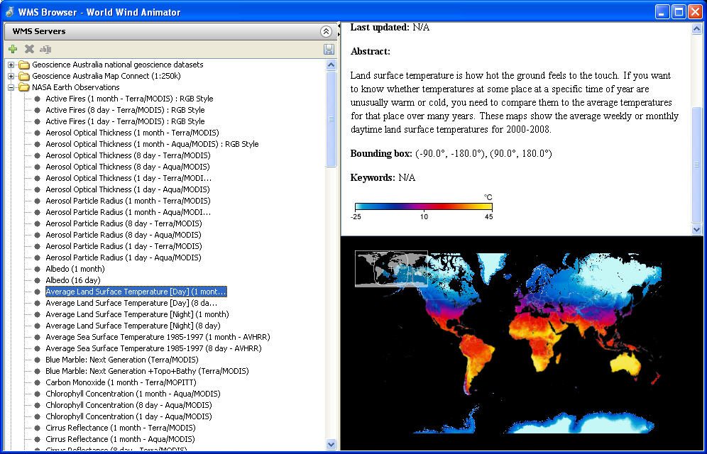
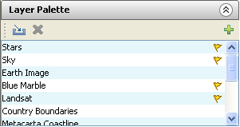

| Author: | Neil Caldwell |
| Version: | Draft |
| Last Modified: | 11/03/2011 |
| History: | See World Wind's SVN Log |
Welcome to the World Wind Animator Tutorials. This document is a series of tutorials that have been written in order to help you, the user, get familiar with using the animator.
Talk about how much is knowledge assumed in the tutorials, and give a brief overview of the animator's use.In this tutorial we are going to create a short animation in which the camera will zoom from orbit into a specific place on the globe. Whilst creating this animation we will cover the camera controls; how to set keyframes and create animation; and how to animate an object's and layer's parameters.
TopWhen you first open the animator, the first thing you should see is the earth. By default, the camera will be pointing into the ocean west of Japan, east of the international date line. In the centre of the screen there will be a crosshair. It shows what the camera is currently pointing at.
Left click close to the crosshair, somewhere on the earth, and, holding the button down, move the mouse to the right. You will notice the globe spinning with the mouse. This is called panning the camera. What is actually happening is you are moving the camera target along the ground, rotating the camera around the earth. Moving the camera up and down will pan down and up. Pan the camera until you can see a familiar country.
When you have found a place that you know, rotate the mouse wheel. Spinning it up zooms the camera in by increments, and spinning it down zooms out. Notice that it steps forward and backward. Try holding down the mouse wheel, using it as a button, and dragging the mouse up and down. Doing this zooms in smoothly. Using it with the pan tool, try to find somewhere you know; a city or town, perhaps, or something interesting like a tall mountain, or mountain range.
As you zoom in closer to the ground the landscape will get more detailed. This is because both the image of the earth and the terrain data is so large it has been broken up into smaller tiles at different levels of detail. The animator downloads the tiles from the Internet as it needs them, so that it doesn't get unneeded and unused data.
You will also notice that the image texturing the earth will change when you get close enough. By default, the animator uses two layers to texture the earth: Blue Marble and Landsat. Blue Marble is a layer NASA generated from satellite imagery in order to present the earth as it would look to the human eye from space. Landsat is another layer of satellite images, which have more detail than the Blue Marble layer. As Landsat is more detailed than blue marble at close distances, by default it is rendered on top of the blue marble layer.
When you have found somewhere interesting, such as a mountain range, click and hold the right mouse button while dragging the mouse downwards within the viewport; the camera will rotate around the target, changing the angle at which you are viewing the landscape. If you are looking at a feature that has some height or depth, you will be able to see that the surface of the globe is three dimensional; Mountains will protrude out of the ground as if you were actually flying over them.
Practice using these tools and find a place that looks interesting.
TopOnce you have found a place, look at the bottom of the the viewport; underneath it there is a time line marking the scene's frames. On top of it is a slide bar marking the first frame, frame zero. The Time Slider always marks the current frame, allowing us to see the scene along the timeline.
The World Wind Animator doesn't have a concept of time past frames; It doesn't know how many frames there are in a second. The number of frames in a second is generally set by the standards in your locale. The two main standards are NTSC and PAL, which run at 30 and 25 frames a second respectively. NTSC is used in America and Japan, while PAL is used practically everywhere else.
Keeping this in mind, Zoom out until you can see the entire country. Center the country, keeping track of where you want to zoom back into. With the time slider on frame 0, press the Insert on the keyboard. This creates a keyframe for all armed parameters and, by default, the camera is armed. The first visible change will be the pink dot in the center of the screen, under the target. That is the camera target. The second is that on the timeslider, on the current frame a little red square will have appeared, to mark that frame as a keyframe.
Move the slider to frame 100, at the end of the timeline. Nothing will happen yet, because you need at least two keyframes to create an animation. Zoom back into the place that you had been looking at before. When you have found it, press Insert again to create a new keyframe. You should now have one keyframe on frame 0, and one on frame 100. If you move the timeslider back to frame 0, you should notice that the camera will zoom itself back out to the place of the first keyframe; Changing the current frame will automatically move the camera to its position at that frame. With the current frame set to 0, press the spacebar. This plays the animation back. It is also available as the Preview option in the animation menu.
Creating an animation is never as easy as that though. After watching the animation, you should have an idea of what could be improved. Perhaps it is too quick, or too slow, but what ever it is, it usually needs some refinement. With this kind of animation, the animator tends to generate too smooth a path between the two points, which is usually not particularly nice on the eyes. If your camera's target is in two different points, some of the footage towards the end of the animation is probably just footage of the ground flying underneath the camera, as if you were looking down from a low flying plane. This isn't particularly easy on the eye, and doesn't really work with a transitional shot. It is generally a better idea to keep the place you are zooming into in the shot at all times.
The easiest way to fix this is to go half way between the two points, which is frame fifty, and attempt to rectify the camera position. This can probably be done by just zooming out, though you may want to pan the camera into a slightly different position. When you are happy with the new position of the camera at the halfway point, press Insert to create a new keyframe. Go back to frame 0 and watch the animation. The first part of the animation probably seems slower, and to flow better.
Keep refining the camera path until you are happy with it. Depending on the scale of your shot, you may want to lengthen the animation. If so, you can do so using the Set frame count option in the Frame menu. You can drag keyframes along the timeslider, or copy/cut and paste them from/to the selected frame, using the familiar Ctrl+X/C/V keyboard shortcuts.
TopWhile watching your animation you have likely noticed that when the Landsat layer becomes visible, it snaps in and the transition is quite noticeable; In some places the terrain is a slightly different colour, relating to the different seasons and conditions to each set of imagery, and Landsat is noticeably more detailed than blue marble. In order to make this transition smoother and less noticeable, we will animate the opacity parameter of the Landsat layer.
There are, by default, only two layers that provide information on the earth in an animation: Blue Marble and Landsat. These are shown in the Animation Browser on the left of the window. Having used another graphics application with layers, one may see the Animation Browser and think that a layer is overlaid onto any layers below it. It is, in fact, the other way around. A layer is overlaid onto any previous layers in the list, so it is overlaid on any layers that are above it. When looking at the Animation Browser, we can see that the Landsat layer is after the Blue Marble layer. This is because the Blue Marble layer is always visible, while the more detailed Landsat layer is only visible up close.
In order to blend the two layers, we can change the opacity parameter of the Landsat layer. Click on the Landsat layer in the Animation Browser and look at the Properties rollout, beneath it. There will be a single slider, labelled Opacity. This value is a number between 0 and 1. It can be thought of as a percentage, where 1 is 100%, 0.5 is 50% and 0 is 0%. What we will do is set the opacity to 0, so it is not visible, on the first frame that it would show up otherwise, and then set the opacity to 1 at around a second latter (25-30 frames).
First, we need to arm the layer. When a layer is armed it will accept keyframes. When it is not armed, it will not accept any keyframes. By default, only the camera is armed. We can tell this because the Camera is the only object in the animation that has a green a button, while the rest have red ones. To arm the Landsat layer, click on the arm layer button, and it will go green. Once we have done that, we can create keyframes for the layer.
To find the first frame Landsat is visible on, slide the timeslider until it is visible and find the exact frame it appears on. Change the Opacity to 0, press enter and then press Insert. Because you have the Landsat layer selected its keyframes will appear light blue on the timeline, instead of red. Move forward a second, and then change the opacity to 1, press enter and then insert. If you do not insert the keyframe, the parameter will revert to 0 the next time the frame changes. This should cause Landsat to blend into Blue Marble, and then completely overlay it in a second. If you have lengthened your animation to slow it down, perhaps you want the transition to happen over a longer period of time.
Once this is done, go back to the first frame and make sure you are happy with the changes. When you are, find the Quick render (detailed) option in the Animation menu. The quick render function renders an image sequence starting with the current frame. A dialog box will ask you to choose a file name, and then append the frame number to the filename as it renders each frame. The animator will save each frame as a targa (.tga) file to the selected directory, using the name you gave it as a prefix in the form name_XXX.tga, where XXX is a frame number.
It is possible that the animator will hang for a while as it makes sure all the necessary data for the render has been downloaded. When it has finished, you will be able to use the image sequence with your favorite compositing suite to create a video.
You should now have an understanding of the World Wind Animator and how to move and animate the camera, manipulate the appearance of the earth by animating layers. You should also have your first space to place animation as an image sequence, which you can now combine into a movie with a video editing program.
TopEverything visible within the animator is a layer. You can change their order and manipulate their various properties in order to get various effects. Layer definitions are written in XML; To add in new effects you can either write your own layers or get them from other sources.
This tutorial aims to go over how to find new layers with the WMS Browser, add them to your animations, as well as how to create fog and Skysphere layers.
Several companies and organisations, such as Geoscience Australia and NASA provide Geoscience information in formats that can be used to create layer files. You can find the WMS Browser in the animator's window menu. WMS stands for 'Web Mapping Service', which is a way to get Geoscience data and maps off the internet. When you open it, you will be presented with three sections: A list to the left and two blank sections.
The list on the left shows known WMS servers. If you expand one (by clicking on the small plus sign next to its icon), such as the NASA Earth Observations server, you will be shown a list of all the data that you can get from that server.
When you click on one, such as one of the Active Fires data sets, The two blank windows will display a description and preview of the data. At the time of writing, While I have the Active Fires (1 month - Terra/MODIS) data selected I can see that there has been fires across Africa in the last month. The abstract tells me the purpose of the data.
In order to get that data and use it as a layer in your scene, you need to export it as a layer. While it is selected, click the save button (which is up the top of the list, on the right hand side). It will ask you where to save it. Once you have saved it close the WMS Browser, find where you have saved the file and drag it into the Animation Browser (where you can see the rest of the layers). This should add it to the bottom of the list, and on the planet you should now be able to see the data over the top of any other layers you have enabled, such as Blue Marble.
If you would like to get data from a different server, or would just like to search to see what else is out there, there is a Search for and Add WMS Browser button, which looks like a green plus button, at the top of the server list, on the left hand side.

If you click on that, it will bring up another window which will have some instructions, a search bar and a results panel. When you search for terms, such as fire, The WMS Browser will try to find WMS Servers on the internet that have data that corresponds to your search terms. Any that are found will be displayed in the results box below the search bar.
If you find a server that you think may have the data you need, you can select it with the checkbox on the left of the entry and then click the okay button. After doing this, it will close the window and you will be able to see any selected servers in the list.
Once you have exported a layer file that will read the data, you can modify or use that layer file within your scene.
TopLayer files are XML files that describe a layer. When you have an XML file you can add it to your scene in two ways. You can either add it to the Layer Palette, found underneath the animation browser and properties rollouts on the left of the World Wind Animator's main window.
If you want to add the layer to the palette, there is a button (It looks like the cross section of an open box with an arrow pointing into it) at the top of the rollout, on the left-most side of the toolbar. Click on it will give you a file picker, and you can chose your new layer. Once it is listed in the layer palette, you can then add it to your animation by clicking on the toolbars right most button, a green plus sign, while the layer is selected. Layers in the palette that are in the animation all have yellow flags to the right of their entry, so once you add it to the scene, you should be able to see a yellow flag appear next to it.
If you want to create your own layers, then you will need a copy of the layer file specification. It is a document that explains the XML schema that describes layers, so you are able to find out what it supports and how to go about writing particular kinds of layers.
<?xml version="1.0" encoding="UTF-8"?> <Layer version="1" layerType="SurfaceShapeShapefileLayer"> <DisplayName>Offshore Basins</DisplayName> <URL>offshore basin data/offshore_basins.shp</URL> <!-- Outline --> <DrawOutline>true</DrawOutline> <OutlineColor red="255" green="255" blue ="255" /> <OutlineWidth>2</OutlineWidth> <OutlineOpacity>1</OutlineOpacity> <!-- Interior --> <DrawInterior>false</DrawInterior> <InteriorColor red="128" green="128" blue="128" /> <InteriorOpacity>0.85</InteriorOpacity> <Antialiasing>true</Antialiasing> </Layer>
In this example, the layer is a surface shape created out of a shape file, named "Offshore Basins". It references where it gets the data, specifies that it is to draw a white outline of the data and that it is not supposed to fill in the shapes with colour.
If you have data formatted correctly, you can display that data on the globe. The next two sections go over how to write fog and skysphere layers.
TopA fog layer creates a coloured distance fog effect in the scene. If it is visible, then the further the fog gets away from the camera, the thicker it gets.
To write a layer file, all you will need is a text editor. Any text editor that saves UTF-8 plain text files will do. If you are running a windows machine you will have notepad, which will do the job.
<?xml version="1.0" encoding="UTF-8"?> <Layer version="1" layerType="FogLayer"> <DisplayName>testName</DisplayName> <NearFactor>1.2</NearFactor> <FarFactor>1.3</FarFactor> <FogColor red="123" green="23" blue="222" /> </Layer>
The above is the example fog file from the specification. The first thing you will notice, if you have ever looked at an XML file before is the XML header. This first line is common across all of the layer files that world wind uses. If it doesn't have one, then it wont work.
The next line declares that the file describes a layer, and that that layer is a FogLayer. You can only have one layer in a file. All the different kinds of layers are described in the specification.
While optional, it is recommended that you have a display name. It is what your layer will be called when you actually put it in the animator. If you do not have one, then it will just display the filename.
The near and far factors describe how close to the camera's current position the fog starts, and how far away it ends. 1.1 is the default for both factors. You will be able to change and animate these parameters from within the animator.
The last line, before the layer closing tag, sets the fogs colour. Colours are specified as RGB values, numbers between 0 and 255 for the amount of red, green and blue in the colour. Those default numbers set the colour to purple.
An interesting thing about fog layers is that they work slightly differently to normal layers. While you expect that a layer will be drawn after any layer above it, thus showing up over the top of it, fog layers work a bit differently; The fog layer is blended into the layer below it. Thus, in order to see the fog layer above Landsat, you have it above Landsat in the animation browser.
TopBy default, the sky layer is just a gradient that creates an atmospheric glow coming from the earth. If you have your camera looking at the horizon, this may seem a bit odd to viewers, as often the sky has clouds and the like.
In 3D scenes this can be achieved by creating a skybox or dome and linking its position to the camera. The skybox would then be textured with panoramic images of the sky. We can do this in the World Wind Animator with a skysphere layer.
CG Cookie Sky Textures by Wes Burke is licensed under a Creative Commons Attribution 3.0 License.Once you have a panoramic image, all you need is a layer definition file. You can find information on the layer type, skysphere, in the layer specification document.
<?xml version="1.0" encoding="UTF-8"?> <Layer version="1" layerType="SkysphereLayer"> <DisplayName>Skysphere</DisplayName> <TextureLocation>cgcookie_sky06.png</TextureLocation> <Rotation>83</Rotation> <Segments>30</Segments> <Slices>30</Slices> </Layer>
The texture location can be a full path, or it can be relevant to the layer specification file's position. Just remember to make sure it is visible from the client.
The rotation listed in the file is the rotation of the texture, which will change the position of the texture when looking north.
The Segments and Slices define how detailed the geometry of the sphere is. The slices run along the sphere, and the segments run from poll to poll.
You should now have some idea of how to define layers. From here you should be able to look through the layer definition file in order to discover how to define layers of different types.
Top